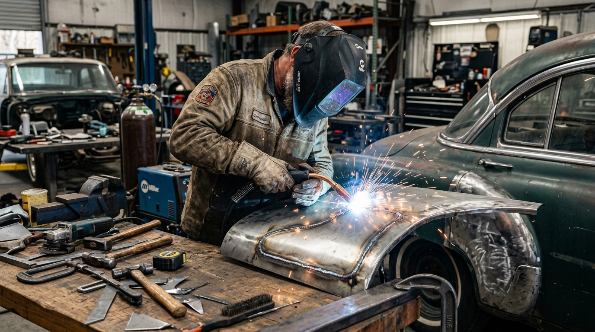

- Início
- 🛠️ Serviços Especializados
- Cabine de Pintura Profissional
- 📝 Blog FG Car
- Sobre a FG Car
- A Oficina & Estrutura
- Fale Conosco / Contato
- Localização & Como Chegar
Recuperação estrutural de lataria, portas, capôs, para-lamas e painéis com alinhamento milimétrico de chassi. Preservamos os pontos originais de segurança, as folgas de montagem e a integridade de fábrica do seu automóvel.

Cada veículo colidido segue um protocolo rigoroso de desmonte, análise dimensional e tração controlada para assegurar que nenhuma tensão mecânica residual comprometa a segurança dos passageiros.
Aferição de longarinas, caixas de roda, colunas e pontos de ancoragem da suspensão para identificar desvios estruturais invisíveis a olho nu.
Correção hidráulica com ancoragem multiponto, aplicando forças calculadas para devolver o monobloco às medidas nominais de fábrica.
Uso de spotters eletrônicos de micro-pulso para desamassar vincos sem queimar o verso da chapa de aço, minimizando o uso de massa plástica.
Ajuste milimétrico dos vãos entre portas, capô, para-lamas e faróis com fechamento suave e hermético, sem ruídos de vento.
Quando um carro sofre uma colisão de média ou alta energia, a substituição de componentes não pode ser feita de maneira arbitrária. Na FG Car em Osasco, as emendas de painéis e colunas respeitam os pontos de corte e de solda estabelecidos pelas montadoras.
Utilizamos solda MIG com gás inerte para manter a tenacidade do aço de alta resistência (HSS). Diferente de oficinas que usam maçarico com excesso de calor — o que destempera a chapa e causa trincas futuras —, nosso processo protege a integridade passiva do veículo.

A excelência da funilaria de colisão & batidas em Osasco e região só é completa quando a etapa de pintura devolve a cor, o reflexo e a textura idênticos ao restante do veículo.
Após a regularização da lataria, o carro é direcionado para a nossa Pintura em Estufa Climatizada, onde a aplicação do verniz é curada termicamente a 60°C. Pequenas mossas periféricas que não sofreram quebra de tinta são tratadas previamente com o Martelinho de Ouro Express para preservar a originalidade ao máximo.

Entenda as diferenças cruciais entre a engenharia de reparação automotiva da FG Car e as práticas ultrapassadas que desvalorizam o seu veículo.
| Critério de Reparação | FG Car Funilaria e Pintura (Osasco) | Oficinas Genéricas / Funilaria Rápida |
|---|---|---|
| Alinhamento Estrutural | Gabarito hidráulico dimensional com tolerância milimétrica | "No olho" e correntes amarradas em vigas sem aferição |
| Técnica de Repuxo de Chapa | Spotter eletrônico de baixa dissipação térmica | Furos na lataria para puxar com gancho ou maçarico |
| Uso de Massa Plástica | Microcamada apenas para nivelamento fino de primer | Camadas espessas de massa que trincam e descascam com sol |
| Ambiente de Pintura | Cabine pressurizada com filtros de teto e cura térmica a 60°C | Pintura ao ar livre sujeita a poeira, insetos e umidade |
| Ajuste de Gaps e Fechamento | Portas fecham com toque suave e vãos 100% paralelos | Portas pesadas, rangidos e vãos tortos perceptíveis |
Respostas claras e transparentes para você tomar a melhor decisão para o seu carro.
Batidas leves em portas ou para-lamas levam em média de 2 a 4 dias úteis, englobando funilaria, pintura em estufa e polimento. Colisões maiores que exigem alinhamento de monobloco no ciborgue ou substituição de peças estruturais levam de 5 a 10 dias úteis, com cronograma transparente informado na entrega do orçamento.
Sim. Utilizamos gabaritos milimétricos e solda MIG/MAG respeitando estritamente os pontos originais das montadoras. As zonas de absorção de impacto e o funcionamento de sensores de airbag permanecem 100% preservados, garantindo total segurança para você e sua família.
Sim! Ao enviar fotos com boa iluminação e de diferentes ângulos para nosso WhatsApp (11) 94004-7324, nossos orçamentistas emitem uma faixa de valor estimada e orientam se há necessidade de trazer o veículo para desmontagem e medição de componentes internos.
Oferecemos garantia formal contra desplacamento de tinta, perda de brilho, empenamentos ou desalinhamento de peças reparadas. Nosso padrão de entrega visa a satisfação total e a valorização patrimonial do seu automóvel.